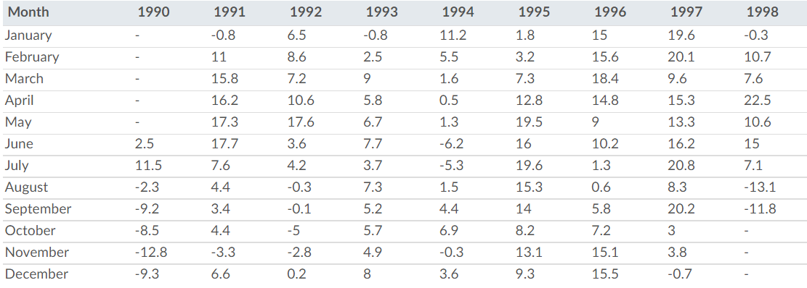

8 Clean and Reformat (aka Tidy) Stock Data
Readings
- Chapter 11.5: R for Data Science—Writing and Saving Data
- Chapter 12: R for Data Science—Tidy Data
- RDS vs. RData
- By the way, contrary to what the article suggests, I don’t believe saving your workspace is a good idea unless you think you’ll need it. It just slows down your computer. That’s the point of a script or markdown file, all the code is already saved so you can reproduce the workspace if necessary.
- Raw vs. blob
- Read this for a short written explanation of getting the right url from GitHub
- This video shows examples of using the correct url to read in the data.
Guided Instruction
In 1973 Princeton University professor Burton Malkiel said
In 1990 the Wall Street Journal took Burton up on his challenge. They ran this challenge until 2002 and pitted random dart throwing selections to expert picks.
We have access to stock return data through 1998. Open the dataset and get familiar with it. The “PROS” rows contain returns that professional investors were able to achieve at that date. The “DARTS” rows contain returns of stocks that were selected by monkeys randomly throwing darts. The “DJIA” rows contain returns for stocks in the Dow Jones Industrial Average. The Dow Jones Industrial Average is a group of 30 stocks for large companies with stable earnings. This “index” of stocks is one of the oldest, most closely watched indices in the world and is designed to serve as a proxy, or indicator, of the United States economy in general. (learn about about “the Dow”.)
We want to look at the returns for each six-month period of the year in which the returns were reported.
- Use the appropriate function in
library(readr)to read in the.RDSfile found on GitHub- Depending on your computer, you should use
read_rds(url("WEBLOCATION.RDS"))orread_rds("WEBLOCATION.RDS")to download and read the .RDS file type. Remember, R is case sensitive. - When using file paths to read files in from Github (and other locations), you must pay attention to ‘raw’ vs. ‘blob’ (seeing the reading below).
- Depending on your computer, you should use
- The
contestant_periodcolumn is not “tidy” we want to create amonth_endand ayear_endcolumn from the information it contains. - Save your “tidy” data as an
.rdsobject. - Create a plot that shows the six-month returns by the year in which the returns are collected. Your plot should highlight the tighter spread of the DJIA as compared to the other two selection methods, DARTS and PROS.
- Include your plot in an
.qmdfile with a short paragraph describing your plots. Play with code-folding to make sure your code is displayed in your file (though have it default to hidden). - Render the
.qmdfile. Push your.qmd,.md,.html, and.rdsfiles into your git repository.
Add to your existing .qmd file to complete these steps:
- Read in the “tidy” data
.rdsobject you saved in the pre class tasks. - Use code to create a table of the DJIA returns that matches the table shown below (apply
pivot_wider()to the data).

- Render the
.qmdfile. Push your.qmd,.md,.htmlinto your git repository.- Don’t be surprised when the table doesn’t render well in the
.mdfile on Github. That is okay, as long as it looks correct in your.htmlor.htmlpreview.
- Don’t be surprised when the table doesn’t render well in the
Submit
In I-learn submit a link to the .md file on GitHub.